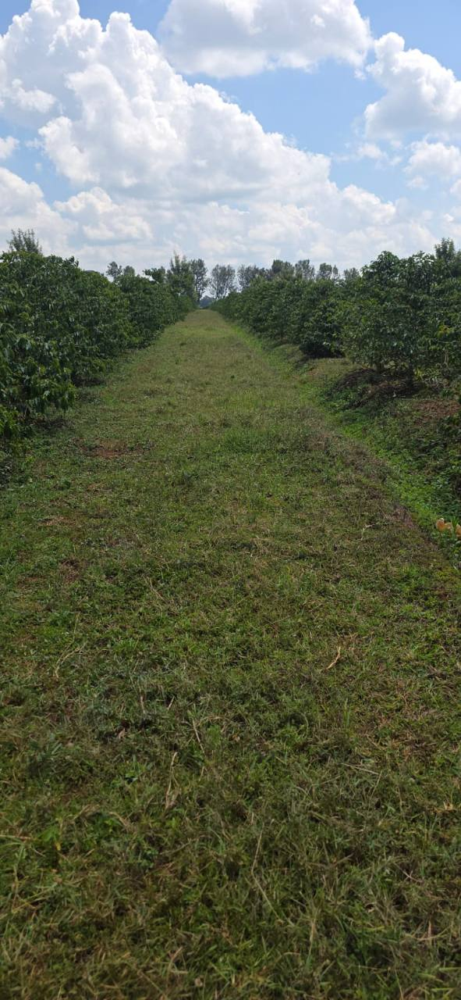
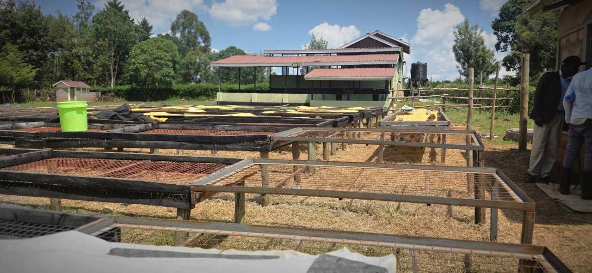
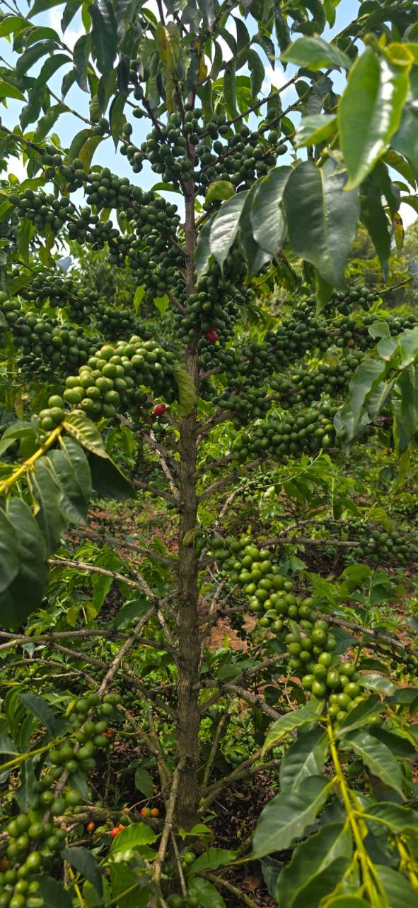
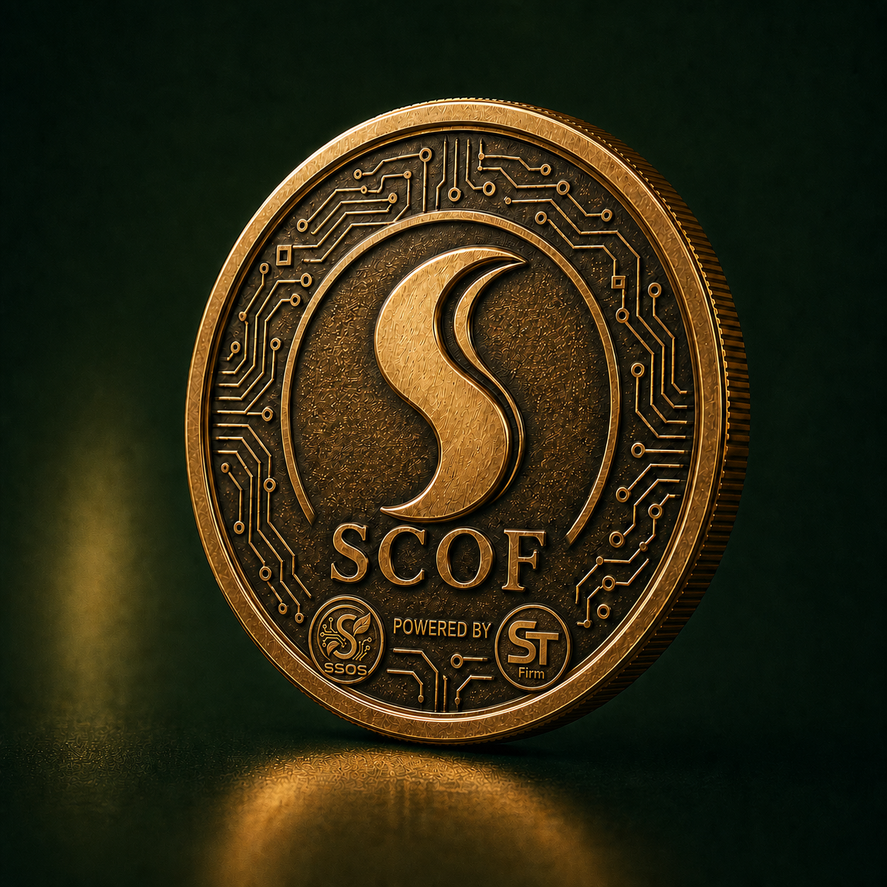
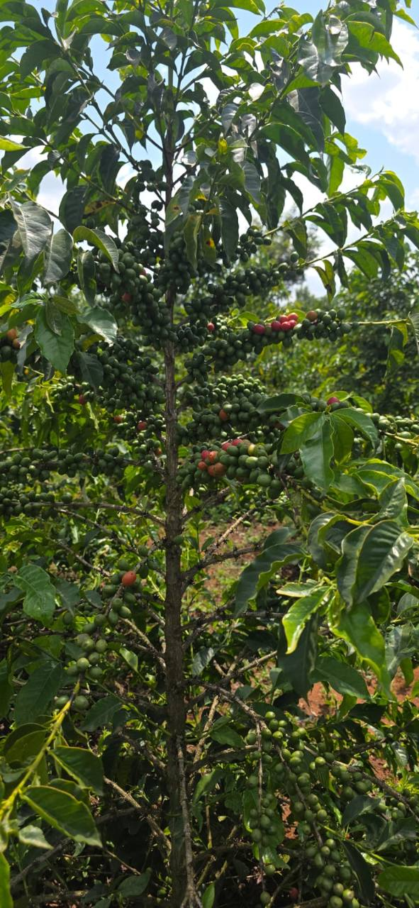

Coffee farms
Established trees, productive blocks and the agricultural knowledge to grow quality coffee.
Rooted in Kenya · Built for the world
Coffee. Technology. AI. Renewable energy. Community. One connected vision built on a real agricultural foundation.
“We are not building from nothing. We are digitizing and expanding an existing coffee ecosystem.”
The SCOF foundationWhy SCOF
Established trees, productive blocks and the agricultural knowledge to grow quality coffee.
Washing, drying and post-harvest infrastructure connect the farm to a market-ready product.
People, skills and local relationships remain at the centre of the ecosystem.
Software and AI create the operating layer for visibility, decisions and future scale.
Renewable energy and a responsible digital treasury vision support resilient growth.
Our farms
Healthy trees, clean access rows and visible infrastructure tell a stronger story than a whitepaper ever could.



SSOS · Farm intelligence
SSOS connects field observations, crop history, images and team actions into one operational view. The goal is simple: turn scattered farm knowledge into timely, practical decisions.

Block KEN-03 · Field record due this week.
Blocks KEN-07 and KEN-09 · Compare cherry development.
Use field observations and team judgement before scheduling.
Recommendations remain reviewable, contextual and connected to accountable field action.
Farm, operational and partner views can be separated according to roles and legitimate access.
The record improves over seasons as observations, actions and outcomes accumulate.

The future SCOF digital asset is being explored as one component of a wider product economy: connecting participation, rewards, traceable products, heritage records and selected ecosystem services.
Its purpose must come from useful products and verified operations. The farm, the coffee and the technology come first.
From cherry to cup
Traceability turns agricultural work into buyer confidence—from a known block through processing, quality and export.
Origin, variety and location.
Date, lot and field record.
Method and washing stage.
Stage, duration and handling.
Grade and batch profile.
Export batch and buyer record.

One connected ecosystem
SCOF connects the physical value chain to tools and infrastructure designed for long-term competitiveness.
Productive farms, quality-focused processing and a clear path from cherry to cup.
ST-Firm software creates a shared operating system for records, workflows and visibility.
Decision support helps teams identify patterns, prioritize attention and improve planning.
A future pathway toward more resilient and responsible farm and processing operations.
Farmer support, local skills and shared progress are fundamental to sustainable growth.
A long-term vision for responsible digital infrastructure—built after real utility, not instead of it.
Partnerships and linkages
SCOF is the connective layer: aligning production, processing, technology, market access and long-term infrastructure around shared value.
Crop care, field records, harvest and local knowledge.
Washing, drying, grading and batch preparation.
Traceability, operational data and buyer visibility.
Roasters, hospitality, export partners and consumers.
Production partnerships, training, data ownership and shared quality improvement.
Discuss this partnership →Post-harvest capacity, lot separation and consistent processing records.
Discuss this partnership →Traceable sourcing, quality feedback and long-term market relationships.
Discuss this partnership →Movement, documentation and dependable connections to global markets.
Discuss this partnership →Field knowledge, crop-health expertise and evidence-based recommendations.
Discuss this partnership →Future renewable solutions for resilient farm and processing operations.
Discuss this partnership →Devices, connectivity, data services and responsible system integration.
Discuss this partnership →Aligned support for infrastructure, farmer value and measured expansion.
Discuss this partnership →Our technology scope
The roadmap is modular: begin with reliable farm and batch records, then add intelligence, integrations and infrastructure as the ecosystem grows.
A structured digital identity for farms, blocks, plants and field locations.
Practical workflows for monitoring crop health, work and production.
A connected record from origin through processing, quality and export.
Analysis that helps teams prioritize attention without replacing farmer expertise.
Permission-based visibility for sourcing, quality and sustainability information.
Future integrations across devices, payments, renewable energy and treasury tools.
Technology by ST-Firm
ST-Firm translates the realities of coffee operations into secure, useful digital products—connecting field workflows, data, AI and partner experiences into one evolving platform.
 Architecture · Software · AI
Architecture · Software · AI
Define the platform modules, user roles, information flows and phased delivery roadmap around real operational needs.
Design and build the SSOS applications, interfaces and workflows used by farm teams, operators and approved partners.
Create reliable data foundations and carefully governed intelligence for monitoring, recommendations and planning.
Connect relevant payment, logistics, device, identity and market services as the partnership network develops.
Build permission-aware systems that respect operational boundaries, partner access and responsible use of farm data.
Learn from users in the field, measure what works and evolve the platform in practical stages rather than all at once.
Build with us
We welcome conversations with coffee buyers, technology partners, impact collaborators and aligned investors who value real operations and a credible path to digital transformation.
Start a WhatsApp conversation